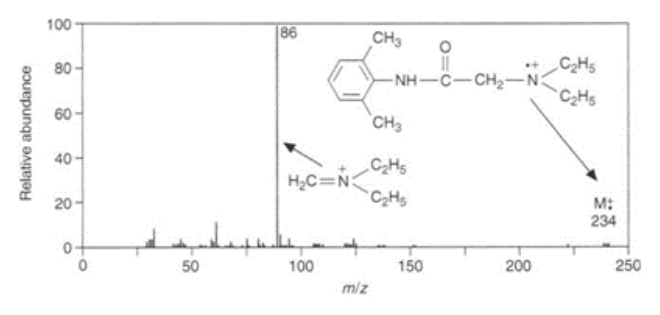
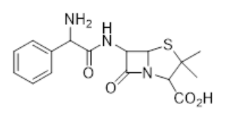
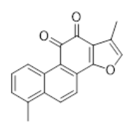

開卷有益 ／
藥師 ／ 藥物分析與生藥學 ／ 112 年第 1 次112 年第 1 次藥師藥物分析與生藥學試題與答案
這一頁是民國 112 年第 1 次藥師藥物分析與生藥學的整份歷屆試題，共 80 題，題目與標準答案出自考選部「國家考試試題及測驗式試題答案」開放資料，其中 78 題附有詳解。以下逐題列出題幹、選項與答案；要計時作答或記錄成績，請用線上練習。
考選部原始場次代碼：112020
線上作答這一科 →
全部 80 題
第 1 題
濃度為0.4% (w/v)之氫氧化鈉水溶液，其pH值約為何？（氫氧化鈉分子量 = 40 g/mol）
（A） 1（B） 11（C） 3（D） 13答案：（D）
詳解與考點 正解：0.4% w/v 表示 0.4 g/100 mL，所以濃度先換算為 4.0 g/L。NaOH 的莫耳濃度為 4.0 g/L / 40 g/mol = 0.100 mol/L；強鹼完全解離，故 [OH−] = 0.100 mol/L。pOH = −log10(0.100) = 1，pH = 14 − 1 = 13，故選 D。
A：1 是此溶液的 pOH，不是 pH；把 [OH−] 算出後仍須由 pH = 14 − pOH 轉換。
B：pH 11 對應的 [OH−] 為 0.001 mol/L，與本題 0.100 mol/L 的 NaOH 濃度相差 100 倍。
C：pH 3 是酸性範圍，與 0.100 mol/L 強鹼完全解離後的鹼性方向相反。
本題考點：重量百分濃度換算（w/v concentration conversion）——先把 g/100 mL 換成 g/L，再除以分子量得到 mol/L；強鹼的 pH 計算（strong-base pH calculation）——強鹼完全解離時先求 [OH−] 與 pOH，再以 pH = 14 − pOH 換算。
第 2 題
下列四種鹼在正丁胺中的鹼性強度，由高至低的順序何者正確？①CH3OLi ②CH3ONa ③CH3OK ④NH2CH2CH2ONa
（A） ④③②①（B） ③②①④（C） ③④①②（D） ④①②③答案：（A）
詳解與考點 正解：題目指定正丁胺這種非水溶媒，鹼性比較要看離子對與金屬陽離子對 alkoxide 的束縛。NH2CH2CH2ONa 在本比較中最強；三種 methoxide 則以 K+ 束縛最弱、Na+ 次之、Li+ 最強，故為 CH3OK > CH3ONa > CH3OLi。合併後順序為 NH2CH2CH2ONa > CH3OK > CH3ONa > CH3OLi，故選 A。
B：此順序把 NH2CH2CH2ONa 置於 CH3OLi 之後，忽略其在正丁胺中的最高鹼性。
C：此順序同時把 CH3OK 排在 NH2CH2CH2ONa 之前，並把 CH3OLi 排在 CH3ONa 之前；兩處都違反本題的比較順序。
D：NH2CH2CH2ONa 的位置正確，但把三種 methoxide 排成 CH3OLi > CH3ONa > CH3OK，剛好顛倒 K+、Na+、Li+ 對鹼性可及性的影響。
本題考點：非水溶媒鹼性（nonaqueous basicity）——非水滴定中不可直接照搬水溶液的鹼性排序，須納入溶媒化與離子對效應；反離子效應（counterion effect）——比較 alkoxide 時，反離子對氧陰離子的束縛越弱，鹼性通常越容易表現。
第 3 題
以0.1 N NaOH標準溶液進行maleic acid（HO2CCH=CHCO2H; pKa 1.85, 6.05; M.W. = 116）水溶液之完全滴定 時，每毫升之0.1 N NaOH 標準溶液相當於多少毫克maleic acid？
（A） 11.6（B） 5.8（C） 116.0（D） 58.0答案：（B）
詳解與考點 正解：maleic acid 有兩個可完全中和的羧酸質子，故當量重為 116 g/mol / 2 eq/mol = 58 g/eq。0.1 N NaOH = 0.1 eq/L，而 1 mL = 0.001 L，所以 1 mL 含 0.1 eq/L × 0.001 L = 1.0 × 10^-4 eq。相當的 maleic acid 為 1.0 × 10^-4 eq × 58 g/eq = 5.8 × 10^-3 g = 5.8 mg，故選 B。
A：11.6 mg 是把 116 g/mol 直接當成當量重，等於忽略 maleic acid 可提供兩個酸性當量。
C：116.0 mg 只是把分子量當成每毫升滴定劑所代表的質量，未乘入 1 mL 0.1 N 只有 1.0 × 10^-4 eq 的量。
D：58.0 mg 雖使用了正確的當量重，卻漏掉 1 mL 0.1 N 滴定劑所含的 1.0 × 10^-4 eq。
本題考點：當量重（equivalent weight）——完全滴定多元酸時，以分子量除以可反應質子數求 g/eq；當量濃度滴定換算（normality titration conversion）——先由 N × L 求 eq，再乘 g/eq，毫升必須先換為公升。
第 4 題
有關費氏滴定法（Karl Fischer titration）之敘述，下列何者錯誤？
（A） 用於測定藥品中的水分含量（B） 費氏試劑之力價可用酒石酸鈉二水合物測定（C） 以直接滴定法滴定至終點時，微過量之費氏試劑可使電流迅速降低（D） 如檢品為無色物質，至滴定終點時，溶液呈琥珀色答案：（C）
詳解與考點 正解：費氏滴定的電量終點是偵測微量游離的 iodine。水分耗盡後，微過量的費氏試劑會留下 iodine，使測得電流迅速上升，而不是迅速降低，故選 C。
A：費氏滴定法專門依水與 iodine、sulfur dioxide 的反應定量水分，這是其基本用途，故此敘述正確。
B：酒石酸鈉二水合物含有固定的結晶水，可作為標準物質測定費氏試劑的力價，故此敘述正確。
D：以直接滴定法處理無色檢品時，終點後微量游離 iodine 會使溶液呈琥珀色，故此敘述正確。
本題考點：費氏滴定終點（Karl Fischer titration endpoint）——水分耗盡後出現游離 iodine，電流或顏色的終點訊號應朝 iodine 殘留的方向判讀；費氏試劑力價（Karl Fischer reagent titer）——以含已知結晶水的標準物質校正每單位試劑所對應的水量。
第 5 題
下列何者不是費氏試劑（Karl Fischer reagent）之組成成分？
（A） 碘（B） 二氧化硫（C） 吡啶（D） 水答案：（D）
詳解與考點 正解：費氏試劑的設計是以 iodine、sulfur dioxide、鹼與醇類溶媒和檢品中的水反應；water 是待測物，不是費氏試劑的組成成分，故選 D。
A：iodine 是費氏反應中的氧化還原試劑，為費氏試劑的必要成分。
B：sulfur dioxide 參與費氏反應循環，也是費氏試劑的組成成分。
C：pyridine 在傳統費氏試劑中提供鹼性環境並參與反應；現代配方可改用其他鹼，但本題所列傳統成分包含 pyridine。
本題考點：費氏試劑組成（Karl Fischer reagent composition）——判斷組成時區分反應試劑與待測水分，水不可被誤當作配方成分；水分定量反應（Karl Fischer water determination）——以 iodine 與 sulfur dioxide 的化學計量反應換算樣品水量。
第 6 題
在鎂鹽鋁鹽共存的檢品，以EDTA滴定其鎂鹽，可加入下列何者以遮蔽鋁與EDTA發生螯合反應？
（A） 三乙醇胺（triethanolamine）（B） 氰化鉀（potassium cyanide）（C） 氟化鈉（sodium fluoride）（D） 檸檬酸（citric acid）答案：（A）
詳解與考點 正解：以 EDTA 滴定 Mg2+ 時，必須先讓 Al3+ 不再消耗 EDTA。triethanolamine 可與 Al3+ 形成配合物而將其遮蔽，使 Mg2+ 仍可供 EDTA 定量，故選 A。
B：potassium cyanide 常用於遮蔽部分過渡金屬離子，並不是本題處理 Al3+ 干擾的指定遮蔽劑。
C：sodium fluoride 對 Al3+ 雖有配位能力，但在 Mg2+ 的 EDTA 滴定條件下也可能影響 Mg2+，不適合作為本題所求的選擇性遮蔽劑。
D：citric acid 是多牙配位劑，可能同時與 Mg2+ 配位而改變可滴定的游離 Mg2+，無法達成本題所需的選擇性。
本題考點：遮蔽劑（masking agent）——複合物滴定遇到干擾金屬時，選能優先固定干擾離子且不妨礙待測離子的配位劑；EDTA 複合物滴定（EDTA complexometric titration）——任何會消耗 EDTA 或降低游離待測金屬的試劑，都會影響定量結果。
第 7 題
維生素A醇（retinol）之氯仿溶液，加入何種試液即現藍色但瞬即消失？
（A） 二氧化硫（B） 三氯化銻（C） 硫酸銅（D） 硝酸亞汞答案：（B）
詳解與考點 正解：retinol 的氯仿溶液與 antimony trichloride 反應會出現短暫藍色，這是維生素 A 的 Carr-Price 反應，故選 B。
A：sulfur dioxide 不提供 Carr-Price 反應所需的 antimony 試劑，不能產生本題所述的瞬現藍色。
C：copper sulfate 不是 retinol 的 Carr-Price 顯色試液，不能用來辨認此特徵藍色反應。
D：mercurous nitrate 也不是維生素 A 的 Carr-Price 試劑；分辨關鍵在反應試液為 antimony trichloride。
本題考點：Carr-Price 反應（Carr-Price reaction）——看到 retinol 氯仿溶液出現瞬時藍色時，判為 antimony trichloride 顯色；維生素 A 鑑別（vitamin A identification）——以共軛多烯鏈對特定顯色試劑的反應辨識，不以一般金屬鹽取代。
第 8 題
關於藥品安定性的敘述，下列何者錯誤？
（A） 零級降解速率常數的單位為h（B） 常見的是零級或一級降解（C） 零級降解的分解速率與反應物的濃度無關（D） 一級降解的半衰期和速率常數呈反比答案：（A）
詳解與考點 正解：零級降解可寫為 C = C0 − k0t，因此 k0 的單位必須是濃度/時間，例如 mg/mL/h；h 單獨只是時間單位，不能作為零級降解速率常數的單位，故選 A。
B：藥品降解常以零級或一級動力學描述，故此敘述正確。
C：零級反應的降解速率為 k0，不隨反應物濃度改變，故此敘述正確。
D：一級反應的半衰期為 t1/2 = 0.693/k，速率常數越大，半衰期越短，故此敘述正確。
本題考點：零級降解（zero-order degradation）——由 C = C0 − k0t 判斷 k0 必帶濃度/時間單位；一級降解半衰期（first-order half-life）——用 t1/2 = 0.693/k 判斷半衰期與速率常數呈反比。
第 9 題
Bisulfite method可用於測定具何類官能基的揮發油含量？
（A） ester（B） alcohol（C） phenol（D） aldehyde答案：（D）
詳解與考點 正解：bisulfite 可對 aldehyde 的羰基進行加成，形成可分離或可測定的 bisulfite 加成物，因此可用於測定揮發油中的 aldehyde 成分，故選 D。
A：ester 的羰基受共振穩定，並不以形成 bisulfite 加成物作為揮發油測定原理。
B：alcohol 不具 aldehyde 羰基，無法進行本題所利用的 bisulfite 加成反應。
C：phenol 的酚羥基不是 bisulfite 加成法的反應官能基；分辨關鍵在可親核加成的 aldehyde 羰基。
本題考點：bisulfite 加成反應（bisulfite addition reaction）——遇到可與 bisulfite 形成加成物的揮發油成分時，優先判斷 aldehyde；羰基官能基鑑別（carbonyl functional-group identification）——酯、醇、酚雖常見於揮發油，但不具本法所需的 aldehyde 反應性。
第 10 題
關於酸價與皂化價之敘述，下列何者錯誤？
（A） 皂化價測定係以KOH溶液進行殘餘滴定（B） 酸價係測定游離脂肪酸含量（C） 兩者皆在室溫下測定（D） 兩者在滴定過程中皆以酚酞為指示劑答案：（C）
詳解與考點 正解：酸價測定游離脂肪酸時可在室溫滴定；皂化價則須使油脂與過量 alcoholic KOH 加熱回流完成皂化，再回滴剩餘的 KOH。因此兩者並非都在室溫下測定，故選 C。
A：皂化價測定先加入已知過量的 KOH，反應後以標準酸回滴殘餘 KOH，屬殘餘滴定，故此敘述正確。
B：酸價以中和游離脂肪酸所需的鹼量表示，故可反映游離脂肪酸含量，此敘述正確。
D：酸價與皂化價的滴定終點皆可使用 phenolphthalein 指示，故此敘述正確。
本題考點：酸價（acid value）——要測的是游離脂肪酸，依其酸鹼中和量判讀；皂化價（saponification value）——油脂酯鍵須先與過量 alcoholic KOH 加熱皂化，再以回滴的剩餘鹼量計算。
第 11 題
溶於甲醇之ampicillin，進行質譜分析所得圖譜如下，其最可能使用之游離法為何？
（A） 電子撞擊（EI）（B） 電灑游離（ESI）（C） 基質輔助雷射脫附（MALDI）（D） 常壓化學游離（APCI）答案：（B）
詳解與考點 正解：ampicillin 為極性、可游離且熱不穩定的 β-lactam，以甲醇溶液直接進樣時，電灑游離（ESI）在常壓下由帶電液滴脫溶劑生成氣相離子，全程不需把分析物加熱汽化，最能保留完整的分子離子與其加成離子訊號，故選 B。
A：電子撞擊（EI）屬硬游離，常要求分析物具揮發性與熱穩定性，且容易產生大量碎片；這與 ampicillin 的極性、易游離特性不相符。
C：基質輔助雷射脫附（MALDI）需依賴基質共結晶與雷射脫附條件，僅由甲醇溶液條件不能支持優先判為此法。
D：常壓化學游離（APCI）可用於部分小分子，但對 readily ionizable 的極性 ampicillin，通常不如 ESI 是直接的優先判斷。
本題考點：電灑游離（electrospray ionization, ESI）——極性、可游離且熱不穩定的分子以溶液進樣時，優先考慮由帶電液滴產生離子的軟游離法；硬與軟游離（hard versus soft ionization）——需保留分子離子時避開易造成廣泛碎裂的 EI。
第 12 題
某藥品溶於去除二氧化碳之水溶液（5.0% w/v）中，於25℃下以鈉光（D line）進行旋光度測定（1 dm貯液 管），測得旋光度為 +5.25°，則其比旋光度 度為何？
（A） +105.0（B） +210.0（C） +26.3（D） +52.5答案：（A）
詳解與考點 正解：比旋光度用 [α]^25_D = α/(l × c) 計算。5.0% w/v = 5.0 g/100 mL = 0.050 g/mL，貯液管長 l = 1 dm，觀測旋光度 α = +5.25°。代入得 [α]^25_D = +5.25°/(1 dm × 0.050 g/mL) = +105.0°·mL/(g·dm)，故選 A。
B：+210.0 需使用 c = 0.025 g/mL 才會得到，與 5.0% w/v 所換算的 0.050 g/mL 不符。
C：+26.3 約需使用 c = 0.200 g/mL，並非題目給定的 5.0% w/v 濃度。
D：+52.5 需使用 c = 0.100 g/mL，等同把題目濃度誤作 10.0% w/v。
本題考點：比旋光度（specific rotation）——固定用 [α]^T_λ = α/(l × c)，其中 l 用 dm、c 用 g/mL；重量體積百分濃度（w/v percentage）——5.0% w/v 必先換成 0.050 g/mL，否則答案會差倍數。
第 13 題
Lidocaine之質譜圖如下，其m/z 為86之質峰最可能是由何種裂解反應獲得？

（A） homolytic α-cleavage（B） heterolytic cleavage（C） retro Diels-Alder fragmentation（D） McLafferty rearrangement答案：（A）
詳解與考點 正解：圖中已標示m/z 86的裂解路徑：lidocaine分子中，鄰接三級胺氮的α碳（羰基旁的CH2與N之間的鍵）發生均裂，一個未成鍵電子留在氮上、另一片段的鍵結電子轉移形成穩定的iminium離子CH2=N+(C2H5)2，質量為86（C5H12N+，2×C2H5=58加N=14加CH2=14，合計86），此為典型的α-cleavage機轉，屬均裂反應（homolytic cleavage），故選A。
B：heterolytic cleavage指鍵結電子對整體轉移至同一片段，通常發生在含雜原子孤對電子直接參與、或鍵結兩端電負度差異極大的情況；本圖裂解形成的是自由基陽離子的α裂解，電子分配符合均裂而非異裂機轉。
C：retro Diels-Alder fragmentation是六員環系統沿雙鍵對側兩鍵同時斷裂、逆向重排回兩個烯類片段的反應，需要特定的環狀結構；lidocaine的苯環醯胺部分不具備此逆反應所需之環系統。
D：McLafferty rearrangement是含羰基化合物經六員環過渡態、γ位氫原子轉移後斷裂β鍵的重排反應，通常見於酮、酯類化合物且需要γ-H存在；m/z 86的裂解位置在醯胺氮旁，並非經由六員環氫轉移產生，不符合此機轉。
本題考點：質譜裂解機轉的判斷（homolytic α-cleavage、heterolytic cleavage、retro Diels-Alder fragmentation、McLafferty rearrangement的區辨）——含胺基化合物在EI游離下最容易在α碳發生均裂形成穩定的iminium離子，是三級胺類藥物質譜解析的典型特徵峰；lidocaine之m/z 86特徵峰是判讀含胺基藥物質譜圖的重要指紋峰。
第 14 題
關於近紅外光譜的應用，下列敘述何者錯誤？
（A） 可用於定量分析生物藥的活性成分（B） 可用於直接分析包裝內的藥品活性成分（C） 可用於分析藥品中的水分（D） 可用於分析藥品製程中的攪拌均勻度答案：（A）
詳解與考點 正解：近紅外光譜主要利用鍵結振動的倍頻與組合頻帶，特別適合固體藥品、製程與水分的快速非破壞分析；對生物藥活性成分的定量通常缺乏足夠專一性，不能把它列為本題所稱的典型應用，故選 A。
B：近紅外光可穿透部分適當包材，因此可不拆封直接分析包裝內藥品的活性成分，故此敘述正確。
C：水的 O-H 吸收在近紅外區域訊號明顯，常用於藥品水分分析，故此敘述正確。
D：近紅外光譜可配合校正模型追蹤混合物的組成變化，能用於製程中攪拌均勻度的監測，故此敘述正確。
本題考點：近紅外光譜（near-infrared spectroscopy, NIR）——遇到固體藥品、水分或製程混合均勻度時，可優先考慮快速非破壞的 NIR；製程分析技術（process analytical technology, PAT）——NIR 的實用性依賴適當校正模型與具代表性的樣品條件。
第 15 題
在ampicillin（結構如圖）的紅外光光譜中，在下列波數何者最可能有強吸收訊號？

（A） 3950 cm-1（B） 2100 cm-1（C） 1780 cm-1（D） 1900 cm-1答案：（C）
詳解與考點 正解：圖中結構具典型penicillin骨架，其中最具鑑別力的官能基是四員環的β-lactam環上的醯胺羰基。因四員環張力極大，使氮原子上的孤對電子難以與羰基形成有效的共軛（醯胺共振受阻），羰基的雙鍵特性因而增強，紅外吸收頻率遠高於一般開鏈醯胺（約1650至1690 cm-1），落在約1780 cm-1的高波數區，是β-lactam類抗生素在IR光譜上最具特徵性的強吸收訊號，故選C。
A：3950 cm-1已超出一般化學鍵伸縮振動涵蓋的範圍（常見O-H、N-H伸縮訊號約落在3200至3600 cm-1），此結構中並無任何官能基會在此波數出現強吸收。
B：2100 cm-1為三鍵（如C≡C、C≡N）或累積雙鍵（如C=C=C）的特徵吸收區，ampicillin結構中不含此類官能基，不會在此處出現強吸收。
D：1900 cm-1雖同屬羰基伸縮的高波數端，但此範圍通常對應張力更大或共軛更受限的特殊羰基系統（如酸酐的不對稱伸縮），一般β-lactam的羰基吸收落在1780 cm-1附近而非此處。
本題考點：β-lactam類抗生素的IR特徵吸收——四員環張力削弱醯胺共振，使C=O吸收頻率高於一般醯胺，是快速辨識此類結構的判準；官能基紅外吸收波數區間的判讀——須先掌握各波數區對應的鍵結類型（三鍵區、羰基區、氫鍵伸縮區），才能排除不合理選項。
第 16 題
下列分析儀器何者不需配備激發光源？
（A） 紅外光光譜儀（B） 紫外光光譜儀（C） 原子放射光光譜儀（D） 螢光光譜儀答案：（C）
詳解與考點 正解：原子放射光光譜以火焰、電漿等能量使原子激發後，自發射出的特徵光進行量測，不需另配入射的光學激發光源，故選 C。
A：紅外光光譜屬吸收量測，必須有紅外光源照射樣品後才能比較吸收。
B：紫外光光譜同樣量測樣品對入射紫外光的吸收，需配備紫外光源。
D：螢光光譜須先以激發光使分子進入激發態，再量測其放射光，因此需要激發光源。
本題考點：原子放射光譜（atomic emission spectroscopy）——原子受熱或電漿激發後自行放光時，量測的是其放射訊號而非外來光的吸收；吸收與螢光光譜（absorption and fluorescence spectroscopy）——吸收與螢光都先需要入射激發光，再分別讀取吸收或放射結果。
第 17 題
在測定核磁共振譜時，下列核種何者最不常用？
（A） 13C（B） 15N（C） 19F（D） 17O答案：（D）
詳解與考點 正解：判斷核種在 NMR 中是否常用，要同時看天然豐度、靈敏度與核自旋造成的譜線寬度。（D）17O 的天然豐度很低，且屬四極核，訊號容易展寬而不利於取得高解析譜圖；除非經同位素富集，實務上遠少於常見的多核種 NMR，故選 D。
A：13C 雖然天然豐度與靈敏度均低於 1H，但 13C NMR 是有機化合物結構鑑定的標準工具，可觀察碳骨架，並非最不常用者。
B：15N 的天然豐度低，常需較多樣品或同位素標記，但在含氮化合物與生物大分子研究仍有明確用途。
C：19F 的靈敏度高且天然豐度高，含氟藥物可直接以 19F NMR 追蹤，使用性反而很好。
本題考點：可觀測核種（NMR-active nuclei）——比較不同核種時，先看天然豐度、磁性靈敏度與是否為四極核；四極核展寬（quadrupolar broadening）——核自旋大於 1/2 時，四極矩相互作用常使訊號變寬，判讀與定量都較困難；多核 NMR（multinuclear NMR）——13C、19F 與 15N 各有結構鑑定用途，不能只按訊號強弱判斷是否常用。
第 18 題
下列化學結構之芳香環氫中，化學位移最小的是幾號氫？
（A） 1（B） 2（C） 3（D） 4答案：（A）
詳解與考點 正解：芳香環氫的化學位移取決於該位置的電子密度：受供電子效應而電子密度升高、遮蔽較強者訊號較上場，化學位移較小；受吸電子效應去遮蔽者則往下場移動，判讀時要把取代基的誘導效應、共振效應與芳香環電流一併比較。本題結構中 1 號氫所在位置的遮蔽最強、電子密度最高，化學位移最小，故選 A。
B：2 號氫不是本題化學位移最小者；與 1 號氫相比，其所在位置的電子密度較低、遮蔽較弱，訊號落在較下場。芳香環氫的位移不能按編號大小排序，必須比較該位置相對於各取代基的電子環境。
C：3 號氫不是本題化學位移最小者；該位置未獲得與 1 號氫相當的增遮蔽效應，訊號相對落在下場。判別時應看該氫是否因吸電子效應而去遮蔽，而非只看它位於芳香環的哪一側。
D：4 號氫不是本題化學位移最小者。芳香環電流與取代基效應會共同改變訊號位置，單一通則不能取代結構位置的逐點比較。
本題考點：芳香環氫化學位移（aromatic proton chemical shift）——比較位置異構物時，先判斷每個氫受到的是遮蔽或去遮蔽；誘導與共振效應（inductive effect、resonance effect）——取代基對電子密度的影響會改變 1H NMR 訊號的上場或下場位置；芳香環電流（aromatic ring current）——判讀芳香族訊號時，要把環流造成的局部磁場與取代基效應一併考慮。
第 19 題
下列何者不是紫外光／可見光光譜儀在藥品及調製配方時的主要應用？
（A） 分析複雜賦形劑（B） 測定藥品在水和有機溶劑間的分配係數（C） 測定藥品在水中的溶解度（D） 監測配方於體外釋出之主成分答案：（A）
詳解與考點 正解：UV/Vis 分光光度法的長處是對可吸收光的分析物做濃度定量，前提是檢品基質不會造成顯著光譜重疊。（A）複雜賦形劑通常包含多種可能吸收或散射光的成分，單靠 UV/Vis 缺乏足夠選擇性，不能視為其主要應用，故選 A。
B：分配係數可先讓藥品在水相與有機相達平衡，再分別測定兩相中的藥品濃度，因此可用 UV/Vis 取得計算所需數值。
C：測定溶解度時，可將飽和溶液經適當處理後以 UV/Vis 定量溶解藥品濃度，這是常見應用。
D：體外釋出試驗可於各取樣時間點以 UV/Vis 測定主成分濃度，據以描繪釋出曲線。
本題考點：紫外可見光定量（UV/Vis spectrophotometry）——只有分析物吸收可與基質背景區分時，吸光度才可直接轉換為濃度；基質干擾（matrix interference）——賦形劑光譜重疊時，應先分離或改用選擇性較高的方法；溶離與釋出試驗（dissolution and release testing）——依時間序列量測主成分濃度，可將吸收訊號轉成釋出行為。
第 20 題
運用差異光譜法（difference spectroscopy）技術去除阿斯匹林錠劑中caffeine與dextropropoxyphene napsylate之 干擾時，以0.1M NaOH萃取之檢品溶液置於樣品容槽時，下列何者應置於參考品容槽？
（A） 以純水萃取之檢品溶液（B） 0.1M NaOH（C） 以0.1M HCl萃取之檢品溶液（D） 純水答案：（C）
詳解與考點 正解：差異光譜法的參考品應保留與樣品相同的混合基質，僅改變會讓目標物光譜改變的條件，才能將共同干擾相消。樣品容槽放入以 0.1 M NaOH 萃取的檢品時，參考品容槽放入（C）以 0.1 M HCl 萃取的同一檢品，可利用酸鹼條件造成的差異保留阿斯匹林訊號並降低 caffeine 與 dextropropoxyphene napsylate 的共同吸收干擾，故選 C。
A：以純水萃取的檢品與鹼性樣品不只酸鹼度不同，萃取條件與組成也不相同，無法形成可歸因於單一成分的差異光譜。
B：0.1 M NaOH 只是溶媒空白，不能抵銷檢品中 caffeine 與 dextropropoxyphene napsylate 的吸收；它適合做一般空白校正，不是本題的差異參考品。
D：純水既不含檢品中的干擾物，也不維持對應的酸性條件，量到的是基質與溶媒差異，不能有效去除干擾。
本題考點：差異光譜法（difference spectroscopy）——參考品要與樣品共享干擾基質，只留下目標物受條件改變後的光譜差；酸鹼差異光譜（pH-difference spectroscopy）——選擇會改變目標物吸收型態的 pH 組合，讓未改變的干擾訊號相消；空白與參考品（blank and reference）——溶媒空白校正背景，差異光譜的參考品則必須保留待消除的共同成分。
第 21 題
下列何種質量分析器（mass analyzer）係藉由測量及計算離子反覆振盪所產生的image current，而獲得準確質 荷比？
（A） 軌道阱傅立葉轉換（orbitrap Fourier transform）（B） 四極柱（quadrupole）（C） 磁場式（magnetic sector）（D） 離子阱（ion trap）答案：（A）
詳解與考點 正解：關鍵線索是離子反覆振盪所感應出的 image current，再以振盪頻率換算準確的 m/z。（A）orbitrap Fourier transform 會量測困在電極間離子的像電流，經 Fourier transform 解析頻率後得到質荷比，因此可提供高準確度質譜資料，故選 A。
B：quadrupole 以射頻與直流電場篩選具有穩定軌跡的離子，是質量濾器，並非量測像電流。
C：magnetic sector 依離子在磁場中偏轉的半徑分離 m/z，判準是動量與磁場偏轉，不是振盪頻率。
D：ion trap 以射頻電場囚禁離子，再依掃描或共振激發方式釋出離子；它可做多級質譜，但不是本題所述的像電流量測架構。
本題考點：Orbitrap 質譜（orbitrap mass spectrometry）——看到離子振盪、像電流與 Fourier transform 時，應連結高解析 Orbitrap；像電流偵測（image current detection）——不必撞擊偵測器，離子運動即可在電極上誘發可量測訊號；質量分析器（mass analyzer）——區分儀器時，依其篩選離子的物理原理，而不是只看是否能做 MS/MS。
第 22 題
使用離子阱（ion trap）之質譜儀常用何種氣體進行裂解反應？
（A） 氙（B） 氦（C） 氖（D） 氬答案：（B）
詳解與考點 正解：離子阱進行碰撞誘導裂解時，常加入低質量的緩衝／碰撞氣體，使被激發的前驅離子經多次碰撞而碎裂。（B）氦氣是 ion trap 常用的碰撞氣體，能兼具緩衝與碰撞傳能作用，故選 B。
A：氙氣原子量高，並非一般 ion trap 裂解反應的常用緩衝氣體。
C：氖氣不是 ion trap 儀器最常採用的碰撞氣體；本題所問的是常規使用的氣體，而非理論上可供碰撞的任何惰性氣體。
D：氬氣可用於某些碰撞池或串聯質譜系統，但典型 ion trap 的裂解與緩衝通常以氦氣為主，裝置位置與操作條件不同。
本題考點：碰撞誘導裂解（collision-induced dissociation）——前驅離子受激發後與惰性氣體碰撞，可產生結構鑑定用的碎片離子；離子阱（ion trap）——碰撞氣體除了傳遞能量，也協助離子冷卻與穩定囚禁；碰撞池與離子阱（collision cell and ion trap）——兩者都可能用惰性氣體，但常用氣體須依質譜架構判斷。
第 23 題
關於紫外光／可見光光譜法的敘述，下列何者錯誤？
（A） 葡萄糖亦具紫外光吸收（B） 可用於測定化合物的pKa（C） 以UV進行含量測定時，須考慮賦形劑之影響（D） 麻黃素（ephedrine）會與亞鐵離子形成錯合物，產生紅移（red shift）現象答案：（D）
詳解與考點 正解：本題要找錯誤敘述，判準是該現象是否有合理的吸收或錯合發色機制。（D）麻黃素與亞鐵離子形成錯合物並產生 red shift，並非 UV/Vis 分析中可成立的典型敘述；麻黃素不應以此組合當作產生紅移的依據，故選 D。
A：葡萄糖雖缺乏強的近紫外發色團，但在遠紫外區仍可有吸收；題目廣稱紫外光吸收，此敘述可成立，故非答案。
B：化合物在不同電離型態下吸收光譜可改變，量測吸光度隨 pH 的變化可用來估定 pKa，故非答案。
C：以 UV 測定含量時，賦形劑若吸收同一波段或造成散射，會改變吸光度，因此必須評估其干擾，故非答案。
本題考點：紫外可見吸收（UV/Vis absorption）——判斷可否直接定量時，要先確認分析物與基質的吸收是否可分辨；光譜法測定 pKa（spectrophotometric pKa determination）——酸鹼型態改變若伴隨吸收差異，可由 pH－吸光度關係推估 pKa；錯合物致色（complex formation）——金屬離子與配位基是否會改變光譜，必須有特定配位與電子躍遷依據，不能任意類推。
第 24 題
下列有關螢光光度測定法的敘述，何者正確？
（A） 會受溶液中重原子影響而使螢光增強（B） 樣品濃度愈高，定量分析結果愈佳（C） 不受檢品中懸浮粒子的影響（D） 溫度會影響測定值答案：（D）
詳解與考點 正解：螢光強度取決於激發態回到基態時輻射與非輻射途徑的競爭，溶液條件改變即可改變量測值。（D）溫度上升常增加分子碰撞與非輻射失活機會，因此會影響螢光強度，故選 D。
A：重原子效應通常促進 intersystem crossing，使螢光量子產率下降或發生淬熄，不能概括為螢光增強。
B：樣品濃度過高會出現 inner-filter effect、自我淬熄或再吸收，螢光強度不再與濃度線性增加。
C：懸浮粒子會散射激發光與放射光，並改變有效光路，故會干擾螢光測定。
本題考點：螢光量子產率（fluorescence quantum yield）——判斷訊號變化時，先比較輻射放光與非輻射失活哪一途徑增加；溫度淬熄（thermal quenching）——溫度改變分子碰撞與能量耗散，量測時須控制溫度；內濾效應（inner-filter effect）——高濃度樣品偏離線性時，先考慮激發光與放射光被樣品本身吸收。
第 25 題
有關核磁共振法的敘述，下列何者錯誤？
（A） 現代儀器皆採用脈衝的寬帶頻率（B） 可測出分子的費米共振（Fermi resonance）（C） 四甲基矽烷可做為化學位移內部標準（D） 頻率在無線電波之波段答案：（B）
詳解與考點 正解：本題問的是 NMR 的敘述，應先分清核自旋能階躍遷與分子振動能階躍遷。（B）Fermi resonance 是紅外線光譜中基本振動與泛頻或組合頻帶耦合的現象，不是核磁共振可測得的共振類型，故選 B。
A：現代 NMR 多以脈衝式寬頻射頻激發後量測自由感應衰減，再做 Fourier transform，故此敘述正確。
C：四甲基矽烷的訊號通常設為 0 ppm，且化學惰性與揮發性佳，可作化學位移內部標準，故非答案。
D：NMR 的共振頻率位於無線電波範圍，與 IR 的振動吸收頻段不同，故此敘述正確。
本題考點：核磁共振（nuclear magnetic resonance）——看到核自旋、射頻與化學位移時，應連結 NMR 而非振動光譜；Fermi 共振（Fermi resonance）——基本振動與接近能量的泛頻耦合時，才在 IR 光譜中考慮；化學位移標準（chemical shift reference）——以 TMS 設定 0 ppm 後，再比較各核所受遮蔽差異。
第 26 題
下列何者為碳核磁共振譜中三級芳香碳訊號之一般化學位移範圍（ppm）？
（A） 145～175（B） 115～135（C） 70～100（D） 50～80答案：（B）
詳解與考點 正解：13C NMR 中芳香環上的三級碳是帶一個氫的 sp2 碳，通常落在芳香烴 CH 的訊號區。（B）115～135 ppm 符合三級芳香碳的一般化學位移範圍，故選 B。
A：145～175 ppm 較偏向受取代基影響較大的芳香季碳或更去遮蔽的 sp2 碳，不能作為一般三級芳香碳的典型範圍。
C：70～100 ppm 常見於與氧相連的脂肪族碳或部分炔碳，不是芳香環 CH 的通常位置。
D：50～80 ppm 多屬脂肪族碳受雜原子影響的區域，與芳香 sp2 碳的化學位移不符。
本題考點：13C NMR 化學位移（13C NMR chemical shift）——先由碳的雜化與相連原子判斷大致位移區，再比對取代基造成的去遮蔽；三級芳香碳（tertiary aromatic carbon）——帶氫的芳香 sp2 碳通常位於約 115～135 ppm；季碳與 CH 區辨（quaternary carbon and CH discrimination）——芳香碳的取代情形不同會改變位移，必要時可配合 DEPT 判別是否帶氫。
第 27 題
下列何者為分光吸光度測定法的關係式？（入射光強度：I0，透射光強度：It，吸光度：A，透射率：T ）
（A） A = -log I0（B） A = log (It × I0)（C） A = -log T（D） A = -log 1/T答案：（C）
詳解與考點 正解：吸光度由透射率定義，先以 T = It / I0 表示透射光與入射光的比值，再取負對數，因此 A = -log T。（C）正是分光吸光度測定的關係式，故選 C。
A：A = -log I0 沒有將入射光強度與透射光強度取比值，且 I0 本身不是無因次透射率，不能直接定義吸光度。
B：A = log（It × I0）以兩個光強度相乘，既不符合透射率定義，也沒有正確的對數方向。
D：A = -log 1/T 等於 log T；因透射率小於 1 時 log T 為負值，會得到與吸光度相反的符號。
本題考點：透射率（transmittance）——先以 T = It / I0 表示通過樣品的光比例，再進行對數轉換；吸光度（absorbance）——A = -log T = log（I0 / It），判斷公式時要同時檢查比值方向與負號；Beer-Lambert law——在適用濃度範圍內，吸光度才可進一步與濃度及光徑連結。
第 28 題
下列方法，何者最適合應用於分析杏仁油中脂肪酸之組成？
（A） 液相層析法（B） 氣相層析法（C） 紅外線光譜法（D） 紫外光光譜法答案：（B）
詳解與考點 正解：題目要分析杏仁油中脂肪酸的組成，重點在將多種脂肪酸逐一分離並定量。脂肪酸通常先衍生為較易揮發的脂肪酸甲酯，再以（B）氣相層析法分離，是油脂脂肪酸組成分析的標準選擇，故選 B。
A：液相層析法可以分析脂質，但對常規脂肪酸組成測定而言，通常不如脂肪酸甲酯 GC 的分離模式直接。
C：紅外線光譜可辨識官能基或整體官能團特徵，無法將油中各脂肪酸逐一分離並給出組成比例。
D：紫外光光譜對脂肪酸組成缺乏足夠選擇性；不同脂肪酸不會因此得到可直接分組定量的光譜峰。
本題考點：脂肪酸甲酯化（fatty acid methyl ester derivatization）——分析脂肪酸組成前，將其轉為較適合 GC 的揮發性衍生物；氣相層析（gas chromatography）——要比較多個可揮發或可衍生化成分的組成時，優先選可逐峰分離的方法；光譜與層析的分工（spectroscopy and chromatography）——需要組成比例時先求分離，需要官能基確認時再考慮光譜。
第 29 題
X；Y；Z三種化合物，其極性大小依序為Y＞Z＞X ，以矽膠薄層層析法分析，在適當溶媒展開下，其Rf值大 小依序為：
（A） X＞Z＞Y（B） X＞Y＞Z（C） Y＞Z＞X（D） Z＞X＞Y答案：（A）
詳解與考點 正解：矽膠薄層層析屬正相層析，極性固定相會較強地吸附極性大的化合物，使其移動距離較短、Rf 較小。已知極性為 Y>Z>X，所以 Rf 反向排序為 X>Z>Y；（A）符合此關係，故選 A。
B：X>Y>Z 把 Y 與 Z 的移動順序顛倒。Y 的極性大於 Z，在矽膠上的保留應更強，Rf 應更小。
C：Y>Z>X 把極性排序直接當成 Rf 排序，忽略了矽膠固定相會優先保留較極性的成分。
D：Z>X>Y 雖將 Y 放在最小 Rf，但把極性最低的 X 排在 Z 之後，與 X 最易隨移動相移動的判準不符。
本題考點：正相薄層層析（normal-phase TLC）——固定相為極性矽膠時，極性越大的化合物保留越強；Rf 值（retardation factor）——在同一展開條件下，移動距離較長者 Rf 較大；極性與保留（polarity and retention）——先判固定相極性，再決定極性排序與 Rf 是否同向或反向。
第 30 題
有關氣相層析儀所使用的檢測器，下列敘述何者錯誤？
（A） 火焰離子化檢測器可用於檢測有機物與無機物（B） 熱傳導檢測器是利用分析物通過電絲的冷卻效應檢測（C） 電子捕捉檢測器可偵測氟氯化合物（D） FT-IR檢測器可得到化合物結構資訊答案：（A）
詳解與考點 正解：本題問錯誤敘述，應按各 GC 檢測器真正感測的物理或化學性質判斷。（A）火焰離子化檢測器主要對含碳、可在氫焰中形成離子的有機化合物有反應，對多數無機物並不適用，因此把有機物與無機物一概列為可檢測是錯誤的，故選 A。
B：熱傳導檢測器以分析物與載氣的熱傳導差異改變加熱電絲散熱狀態來偵測，故此敘述正確。
C：電子捕捉檢測器對具高電子親和力的鹵素化合物特別靈敏，氟氯化合物可被偵測，故非答案。
D：GC-FT-IR 可在層析分離後取得紅外線光譜，提供官能基與結構鑑定資訊，故此敘述正確。
本題考點：火焰離子化檢測器（flame ionization detector）——看到 FID 時，先連結可燃性有機碳的離子化訊號，不要泛化到無機物；熱傳導檢測器（thermal conductivity detector）——分析物改變熱傳導與電絲冷卻時可產生通用型訊號；電子捕捉檢測器（electron capture detector）——遇到鹵素化或強吸電子化合物時，優先想到其高靈敏度。
第 31 題
下列何者可提高液相層析法之管柱效率？
（A） 增加移動相流速（B） 增加固定相膜厚（C） 提高分析的溫度（D） 增加固定相粒徑答案：（C）
詳解與考點 正解：提高液相層析管柱效率的方向，是降低帶展寬並改善質傳遞。（C）提高分析溫度可降低移動相黏度、改善溶質在管柱中的質傳遞，在適當條件下可提高管柱效率，故選 C。
A：增加移動相流速會縮短分析時間，但流速過高會使質傳遞來不及平衡而增加帶展寬，不能視為提高效率的通則。
B：增加固定相膜厚會增加溶質進出固定相所需的質傳遞距離，通常不利於減少帶展寬。
D：增加固定相粒徑會使路徑差異與質傳遞阻力增加；提高效率通常是選較小粒徑，而不是較大粒徑。
本題考點：管柱效率（column efficiency）——要提高理論板數，應尋找能減少帶展寬的條件；Van Deemter equation——流速、粒徑與質傳遞共同決定最佳效率，不能只追求更快流速；溫度效應（temperature effect）——提高溫度若能降低黏度並改善質傳遞，可改善 HPLC 分離效率。
第 32 題
有關層析分離法之敘述，下列何者錯誤？
（A） K'為capacity factor，一般為2～5較適當（B） α可定義為K2/K1（C） N一般用來表示理論板數（D） Rs一般須小於1.5才可視為完全分離答案：（D）
詳解與考點 正解：層析分離是否達到基線分離要看 resolution，而非只要兩峰略有間隔。（D）Rs 通常須達約 1.5 或更大才可視為完全分離；寫成小於 1.5 才完全分離，方向相反，故選 D。
A：K' 是 capacity factor，實務上常以約 2～5 作為適合保留範圍，兼顧分離與分析時間，故非答案。
B：當第二個化合物保留較強時，separation factor 可寫為 α = K2 / K1，且 α 大於 1，故此敘述正確。
C：N 表示 theoretical plates，用來描述管柱效率與峰展寬程度，故非答案。
本題考點：解析度（resolution，Rs）——判斷兩峰是否基線分離時，使用 Rs 約 1.5 的門檻，而不是只看峰是否分開；容量因子（capacity factor，K'）——以保留與分析時間的平衡判斷 K' 是否落在適用範圍；選擇性因子（selectivity factor，α）——兩峰保留比越能拉開，通常越有利於分離。
第 33 題
關於高效液相層析法之理論，下列何者正確？
（A） resolution（Rs）大於1.5表示波峰的完全分離（B） asymmetry factor 小於0.5時，顯示波峰拖尾（C） separation factor（α）為0時，表示兩種化合物的滯留時間相同（D） capacity factor（K'）愈小，表示化合物之滯留時間愈長答案：（A）
詳解與考點 正解：高效液相層析理論中，完整分離要同時有足夠的選擇性與管柱效率，常以解析度判斷。（A）Rs 大於 1.5 代表兩峰通常可達基線分離，因此此敘述正確，故選 A。
B：asymmetry factor 小於 0.5 表示前伸而非拖尾；拖尾峰的尾端拉長，通常以大於 1 的不對稱因子表示。
C：兩種化合物滯留時間相同時，選擇性因子 α 應為 1；α 為 0 不符合以保留因子比值表示的定義。
D：capacity factor 越小，代表化合物越接近死時間洗脫、滯留越短；滯留時間變長時 K' 應增加。
本題考點：基線分離（baseline separation）——需要判斷分離是否足夠時，以 Rs 大於 1.5 作為常用門檻；峰形不對稱（peak asymmetry）——不對稱因子小於 1 偏前伸，大於 1 才是拖尾方向；容量因子（capacity factor）——K' 反映超過死時間的相對保留，值越大表示保留越久。
第 34 題
使用高效液相層析法時，下列何者無法達到分離鏡像異構物的目的？
（A） 移動相中加入對掌性修飾劑（B） 以對掌性試劑衍生化分析物（C） 將cyclodextrin修飾至固定相上（D） 將crown ether修飾至C18管柱上答案：（D）
詳解與考點 正解：分離鏡像異構物的必要條件是建立對掌選擇性，使兩個 enantiomers 與系統形成可區別的非對映關係。（D）僅將 crown ether 修飾至一般 C18 管柱，未建立明確的對掌辨識機制，不能達到鏡像異構物分離的目的，故選 D。
A：在移動相加入對掌性修飾劑，可使兩個 enantiomers 形成穩定度不同的暫時性複合物，因此可改變其保留差異。
B：以對掌性試劑衍生化後，兩個 enantiomers 轉成非對映異構物，物理化學性質不同，可在一般層析系統分離。
C：cyclodextrin 具有可提供對掌辨識的手性空腔與羥基環境，修飾至固定相後可作為對掌性固定相。
本題考點：對掌分離（chiral separation）——先確認系統是否提供可區分兩個 enantiomers 的手性環境；對掌性衍生化（chiral derivatization）——將 enantiomers 轉為非對映異構物後，可利用一般層析的保留差異分離；對掌性固定相（chiral stationary phase）——cyclodextrin 等具有手性辨識位點的材料才能直接提供選擇性。
第 35 題
某藥品含量的分析結果與其relative standard deviation（RSD, %）的表示，下列何者正確？
（A） 99.2 ± 0.22（%）；RSD = 0.22（B） 101.15 ± 0.35（%）；RSD = 0.35（C） 1.0051 ± 0.0063（% w/w）；RSD = 0.63（D） 1.784 ± 0.124（μg/mL）；RSD = 7.0答案：（D）
第 36 題
塑化劑極性低，下列何種分析法較適合用於塑化劑之篩選分析？
（A） GC-MS（B） CE-MS（C） HPLC-MS（D） ICP-MS答案：（A）
詳解與考點 正解：塑化劑多為低極性的有機化合物，篩選時需要兼顧分離多種成分與以質譜確認身分。（A）GC-MS 適合分析可揮發或可在進樣條件下氣化的低極性塑化劑，能先以 GC 分離，再以質譜提供特徵離子作篩選與確認，故選 A。
B：CE-MS 主要依帶電粒子的電泳遷移率分離，對低極性且中性的塑化劑通常不是最合適的首選。
C：HPLC-MS 可以處理部分非揮發性有機物，但本題強調低極性塑化劑的篩選，常規方法以 GC-MS 更直接。
D：ICP-MS 偵測的是元素與同位素訊號，不能直接提供塑化劑這類有機分子的結構與組成篩選。
本題考點：GC-MS（gas chromatography-mass spectrometry）——低極性且可氣化的有機污染物需要篩選時，先用 GC 分離再用 MS 確認；毛細管電泳（capillary electrophoresis）——依電荷與遷移率分離，較適合帶電或可電離分析物；ICP-MS——要測元素濃度或同位素比時才選用，不能取代有機分子鑑定。
第 37 題
以毛細管區帶電泳法（CZE）分析分子量相同但電荷不同之三種待測物（①帶正電荷 ②不帶電荷 ③帶負 電荷），如檢測器置於陰極端，則待測物在電泳圖出現之先後順序為何？
（A） ①②③（B） ②①③（C） ③②①（D） ①③②答案：（A）
詳解與考點 正解：關鍵在 CZE 的電滲流與帶電粒子的電泳遷移方向。檢測器置於陰極端時，帶正電待測物同時受電場吸向陰極並隨電滲流前進，最先到達；未帶電待測物僅隨電滲流移動；帶負電待測物的電泳方向朝陽極，會抵消部分電滲流，最晚到達。因此到達順序為帶正電、未帶電、帶負電，與（A）所列順序相符，故選 A。
B：其順序把未帶電待測物排在帶正電待測物之前。未帶電待測物沒有電泳遷移率，只能跟隨電滲流，速度不會快過同向受電場牽引的陽離子。
C：其順序讓帶負電待測物最先到達。帶負電待測物的電泳遷移與朝陰極的電滲流相反，故在一般 CZE 條件下反而最慢。
D：其順序把帶負電待測物放在未帶電待測物之前，忽略了負電荷對抗電滲流的效應；兩者的分辨關鍵在是否另有朝陽極的電泳遷移。
本題考點：毛細管區帶電泳（capillary zone electrophoresis, CZE）——先判斷電滲流指向，再把各分析物的電泳遷移方向加上去排序；電滲流（electroosmotic flow, EOF）——在典型未塗層石英毛細管中朝陰極移動，未帶電分子以此作為主要遷移來源；電泳遷移率（electrophoretic mobility）——陽離子與 EOF 同向而加快，陰離子反向而減慢。
第 38 題
某層析分離管進行層析分析所得資料如下：V0 = 1.1 mL，V1 = 5.1 mL，V2 = 9.1 mL（V0 = void volume，V1 = peak 1之滯留體積，V2 = peak 2之滯留體積），則selectivity（α1,2 = K'2 / K'1）為何？
（A） 2.0（B） 0.5（C） 4.0（D） 1.0答案：（A）
詳解與考點 正解：本題要由滯留體積求 selectivity，先以 k' = (VR - V0) / V0 計算兩個 peak 的容量因子，因為兩峰都必須扣除 void volume。Peak 1：k'1 = (5.1 mL - 1.1 mL) / 1.1 mL = 4.0 / 1.1 = 3.64。Peak 2：k'2 = (9.1 mL - 1.1 mL) / 1.1 mL = 8.0 / 1.1 = 7.27。再代入 α1,2 = k'2 / k'1 = 7.27 / 3.64 = 2.00，故選 A。
B：0.5 是將兩個容量因子的次序倒置，以 k'1 / k'2 計算所得；題目明定 α1,2 要用 k'2 / k'1。
C：4.0 只是 Peak 1 的校正後滯留體積 VR - V0，量綱仍是 mL，並不是兩個容量因子的比值。
D：1.0 代表兩峰的容量因子相同，但本題由數值可得 k'2 為 k'1 的兩倍，兩峰的保留並不相同。
本題考點：容量因子（capacity factor, k'）——由 (VR - V0) / V0 求得，先扣除 void volume 才能比較固定相造成的保留；選擇性（selectivity, α）——以後出峰與先出峰的 k' 相除，α > 1 才表示兩者有保留差異；滯留體積（retention volume, VR）——不可直接當作 k' 或 α，須依公式校正並除以 V0。
第 39 題
下列逆相液相層析固定相之修飾基團，何者最常用？
（A） CN（B） diol（C） n-octadecyl（D） NH2答案：（C）
詳解與考點 正解：逆相液相層析以疏水固定相保留較疏水的分析物，最常用的鍵結相是長鏈 C18，也就是 n-octadecyl 修飾基團；它提供穩定且強的疏水交互作用，故選 C。
A：CN 為較極性的 cyanopropyl 修飾基團，可用於特定選擇性分離，但不是逆相層析最常規的長鏈疏水固定相。
B：diol 固定相帶有多個羥基、極性高，常用於正相或親水性分離條件；其保留特性不等同於 C18 的疏水分配。
D：NH2 固定相具極性，且可表現弱陰離子交換性，適合的分離模式與以 n-octadecyl 為主的逆相保留不同。
本題考點：逆相液相層析（reversed-phase liquid chromatography）——固定相越疏水，越適合以流動相極性改變來分離疏水性分析物；C18 鍵結相（octadecylsilane, ODS）——看到最常用的逆相固定相時優先連結 n-octadecyl；固定相選擇性（stationary-phase selectivity）——CN、diol、NH2 雖可作層析固定相，但須依極性與離子交互作用判斷用途。
第 40 題
有關離子交換層析的敘述，下列何者錯誤？
（A） 固定相係styrene和divinylbenzene之聚合物（B） divinylbenzene之含量與交聯程度有關（C） 含磺酸根官能基者屬於陽離子交換型（D） 含羧酸根官能基者屬於陰離子交換型答案：（D）
詳解與考點 正解：判準是固定相上的帶電官能基會交換何種待測離子。羧酸根解離後帶負電，會與溶液中的陽離子進行交換，因此屬弱陽離子交換型，不能稱為陰離子交換型，故選 D。
A：styrene 與 divinylbenzene 的聚合物是離子交換樹脂常見的骨架，能提供耐用的多孔固定相。
B：divinylbenzene 作為交聯劑，其含量會影響樹脂的交聯程度與孔隙、膨潤等性質，敘述正確。
C：磺酸根在操作條件下帶負電，能吸附並交換陽離子，故為強陽離子交換型的典型官能基。
本題考點：離子交換層析（ion-exchange chromatography）——先看固定相解離後的電荷，再判斷它保留相反電荷的離子；陽離子交換劑（cation exchanger）——帶負電的 sulfonate 或 carboxylate 交換陽離子，強弱取決於官能基的酸鹼性；樹脂交聯（resin cross-linking）——交聯劑比例改變固定相的物理結構與溶質可及性。
第 41 題
下列何種植物不富含菊糖（inulin）？
（A） kohlrabi（大頭菜）（B） lappa（牛蒡）（C） chicory（菊苣）（D） echinacea（紫錐菊）答案：（A）
詳解與考點 正解：判斷 inulin 要連結富含果聚糖的地下儲藏組織。牛蒡、菊苣與紫錐菊都是常見的 inulin 來源；kohlrabi（大頭菜）不以富含 inulin 著稱，因此是不富含者，故選 A。
B：lappa（牛蒡）的根部含有 inulin，常作為辨認其儲藏多醣組成的例子。
C：chicory（菊苣）根是常見的 inulin 商業來源，與題目所問的多醣相符。
D：echinacea（紫錐菊）的根部亦可見 inulin，不能作為本題的排除項。
本題考點：菊糖（inulin）——遇到根部或地下儲藏組織的生藥時，先區分其主要儲藏醣是否為果聚糖；果聚糖（fructan）——由 fructose 單元為主組成，常用來辨別特定植物根的多醣成分；生藥基原與成分（crude drug source and constituents）——同屬多醣題時需同時記住植物來源與使用部位。
第 42 題
下列那些可作為代用血漿？①dextran ②hetastarch ③inulin ④algin
（A） ①④（B） ①②（C） ②③（D） ③④答案：（B）
詳解與考點 正解：代用血漿要能在血管內維持膠體滲透壓並擴充循環血液容積。dextran 與 hetastarch 都是可作為膠體血漿增量劑的高分子製劑，因此（B）同時包含兩個正確項目，故選 B。
A：dextran 可作代用血漿，但 algin 為藻酸鹽相關多醣，常見用途不在血管內血漿容積擴充；一個成分正確不足以使組合成立。
C：hetastarch 可作代用血漿，但 inulin 主要用於腎絲球過濾率的測定，不是本題所稱的血漿增量劑。
D：inulin 與 algin 都不具本題所需的標準代用血漿用途，不能組成正確配對。
本題考點：代用血漿（plasma volume expanders）——先判斷高分子是否能作血管內膠體容積擴充，而非只看是否為多醣；dextran 與 hetastarch——兩者皆為典型膠體血漿增量劑，組合題須確認每一項都成立；inulin clearance——inulin 用於評估腎絲球過濾率，不能因其為多醣而誤列入代用血漿。
第 43 題
人參皂苷Rg1之C-20位置所接之R基為何？
（A） glucosyl（B） rhamnosyl（C） ribosyl（D） galactosyl答案：（A）
詳解與考點 正解：人參皂苷 Rg1 的糖基連接位置是本題的辨識重點；其 C-20 位置接的是 glucosyl 基團，故選 A。
B：rhamnosyl 雖也是天然醣苷常見的糖基，但不是 Rg1 在 C-20 的取代基。
C：ribosyl 與 glucosyl 同為醣基名稱，差異在糖的結構與碳數；Rg1 的 C-20 結構並非 ribosyl。
D：galactosyl 與 glucosyl 只差在部分立體化學配置，正因相近而具誘答性；本題指定的 Rg1 C-20 糖基仍為 glucosyl。
本題考點：人參皂苷（ginsenosides）——判讀結構題時須同時鎖定皂苷骨架與各碳位的糖基；糖基取代（glycosyl substitution）——glucosyl、galactosyl、rhamnosyl、ribosyl 不能只憑皆為糖基而互換；原人參三醇型皂苷（protopanaxatriol-type ginsenoside）——遇到 Rg1 時以其特定的糖基連接位置辨認。
第 44 題
Phloridzin之結構如下，其苷元（aglycon）屬於下列何種架構？
（A） dihydrochalcone（B） anthraquinone（C） stilbene（D） lignan答案：（A）
詳解與考點 正解：Phloridzin 水解後的苷元為 phloretin，屬於 dihydrochalcone 架構；其特徵是 chalcone 的中央雙鍵被還原，保留兩個芳香環與羰基相連的骨架，故選 A。
B：anthraquinone 具有蒽環型稠合芳香環與醌基，骨架排列不同於 phloretin 的開鏈二芳基酮結構。
C：stilbene 是兩個苯環以碳碳雙鍵相連的骨架，沒有 dihydrochalcone 所具有的羰基與還原後側鏈。
D：lignan 由兩個 phenylpropanoid 單元偶聯而成，連接方式與 phloridzin 的苷元不同。
本題考點：苷元（aglycon）——先去除糖基，再依非醣部分的碳骨架分類；dihydrochalcone——看到 phloretin 或 Phloridzin 時，以 chalcone 中央雙鍵還原後的二芳基酮骨架辨認；天然物骨架分類（natural-product scaffold classification）——anthraquinone、stilbene、lignan 的差異須由芳香環連接方式與羰基位置判斷。
第 45 題
下列有關醣苷類之綜合敘述，何者正確？
（A） Salix purpurea使用部位為葉子（B） salicin具抗風濕活性（C） 商業上大多數vanillin之合成來自於gallic acid（D） vanillin為glucovanillic alcohol之苷元（aglycon）答案：（B）
詳解與考點 正解：本題要把醣苷的來源、苷元與藥理作用分開判斷。salicin 可在體內轉為具 salicylate 作用的成分，具有抗風濕相關活性，故（B）正確，故選 B。
A：Salix purpurea 作為生藥時主要使用樹皮，不是葉子；柳樹皮中的 salicin 才是本題辨識來源的重點。
C：商業上大多數 vanillin 的製程並非主要來自 gallic acid；此敘述把可能的化學轉換來源誤作主流工業來源。
D：glucovanillic alcohol 水解後的苷元為 vanillyl alcohol，經氧化才可形成 vanillin；因此 vanillin 不是該醣苷直接的 aglycon。
本題考點：salicin——看到柳樹皮醣苷時，將其代謝後的 salicylate 相關抗風濕作用連結起來；苷元（aglycon）——水解後先辨認直接生成的非醣部分，不可把後續氧化產物當作苷元；vanillin biosynthesis and production——天然前驅物、代謝轉換與商業合成來源需分開判斷。
第 46 題
Glycosyl transferase可將下列何者之醣基轉換至苷元（aglycon）？
（A） sugar-1-phosphate（B） UTP-sugar（C） UDP-sugar（D） sugar-6-phosphate答案：（C）
詳解與考點 正解：glycosyl transferase 轉移糖基時需要活化的核苷酸糖作為供體，典型供體為 UDP-sugar，再把糖基接到 aglycon 的受體官能基上，故選 C。
A：sugar-1-phosphate 可作為形成活化糖基的前驅物，但不是此類 glycosyl transferase 最典型的直接糖基供體。
B：UTP 是形成 UDP-sugar 時會用到的核苷酸；直接被酵素辨認並轉移糖基的形式是 UDP-sugar，不是 UTP-sugar。
D：sugar-6-phosphate 是醣類代謝常見的磷酸化中間體，未具有核苷酸糖供體所需的活化離去基。
本題考點：糖基轉移酶（glycosyl transferase）——判斷糖基供體時優先找 nucleotide sugar，而非一般磷酸糖；UDP-sugar——糖基與 UDP 相連形成高轉移潛能，是天然物醣苷生合成的常見供體；苷元（aglycon）——糖基通常接到其羥基等受體位置，生成對應的醣苷。
第 47 題
下列何者非強心配醣體之作用機制？
（A） 抑制心肌細胞之Na+, K+-ATPase（B） 增加心肌細胞內Na+濃度（C） 減少心肌細胞內K+濃度（D） 減少心肌細胞內Ca++濃度答案：（D）
詳解與考點 正解：強心配醣體抑制 Na+/K+-ATPase 後，心肌細胞內 Na+ 上升、K+ 下降，並使 Na+/Ca2+ exchanger 排出 Ca2+ 的驅動力降低，結果是細胞內 Ca2+ 增加而非減少。因此（D）與其正性肌力機轉相反，故選 D。
A：抑制心肌細胞 Na+/K+-ATPase 是強心配醣體作用的起點，敘述正確，故非答案。
B：Na+/K+-ATPase 受抑制會減少 Na+ 外排，使心肌細胞內 Na+ 濃度增加，敘述正確，故非答案。
C：Na+/K+-ATPase 原本將 K+ 運入細胞，受抑制後細胞內 K+ 會下降，敘述正確，故非答案。
本題考點：強心配醣體（cardiac glycosides）——由 Na+/K+-ATPase 抑制一路推到細胞內 Ca2+ 上升，判斷離子變化不可只記單一步驟；Na+/Ca2+ exchanger——細胞內 Na+ 上升會削弱其排鈣效應，因而增加心肌細胞內 Ca2+；正性肌力作用（positive inotropy）——可收縮的 Ca2+ 增加才會增強心肌收縮力。
第 48 題
下列有關中藥甘草之敘述，何者錯誤？
（A） 主成分glycyrrhizin為四環三萜類（B） 含有黃酮類成分（C） 具抗發炎的藥效（D） 能調和諸藥答案：（A）
詳解與考點 正解：甘草主成分 glycyrrhizin 為 oleanane 型五環三萜皂苷，不是四環三萜類；題目問錯誤敘述，因此（A）為答案，故選 A。
B：甘草除 triterpenoid saponin 外，亦含有 flavonoids 等成分，敘述正確，故非答案。
C：glycyrrhizin 與甘草的其他成分具有抗發炎相關藥效，敘述正確，故非答案。
D：調和諸藥是甘草在中醫藥學中的常見功效歸納，敘述正確，故非答案。
本題考點：甘草（Glycyrrhizae Radix）——辨認主成分時先連結 glycyrrhizin 與 triterpenoid saponin；五環三萜（pentacyclic triterpenes）——oleanane 型骨架為五環，遇到四環分類時應排除；黃酮類（flavonoids）——甘草為同時含皂苷與黃酮類的代表性生藥。
第 49 題
下列何類型成分具benzo-γ-pyrone之骨架？
（A） coumarin（B） chromone（C） anthraquinone（D） isoquinoline答案：（B）
詳解與考點 正解：benzo-γ-pyrone 指 benzopyran-4-one 骨架，也就是 chromone；羰基位於 γ-pyrone 對應的位置，故選 B。
A：coumarin 為 benzo-α-pyrone，對應的是 benzopyran-2-one；名稱只差 α 與 γ，但羰基位置不同。
C：anthraquinone 為蒽環稠合的醌類骨架，並非 benzopyranone 類。
D：isoquinoline 是含氮雜環骨架，分類關鍵在氮原子而非 pyrone 環，與題目不符。
本題考點：chromone——看到 benzo-γ-pyrone 或 benzopyran-4-one 時直接對應 chromone；coumarin——看到 benzo-α-pyrone 或 benzopyran-2-one 時才對應 coumarin；天然物骨架命名（natural-product scaffold nomenclature）——以羰基在 pyrone 環的位置區分相近名稱，不能只看皆有 benzopyrone 字樣。
第 50 題
Theobroma cacao種子經熟成（curing process），由白色變成暗紅棕色，再經碾壓製成巧克力（chocolate）。 下列何者為此暗紅棕色素的前驅物質？
（A） epicatechin（B） theobromine（C） caffeine（D） sesamol答案：（A）
詳解與考點 正解：Theobroma cacao 種子熟成時的暗紅棕色與酚類氧化、聚合有關。epicatechin 為可參與此類反應的 flavan-3-ol，是該色素的前驅物質，故選 A。
B：theobromine 為 methylxanthine，主要與可可的苦味及藥理活性相關，不是形成暗紅棕色色素的酚類前驅物。
C：caffeine 同為 methylxanthine，雖與飲品成分辨識有關，但不提供本題所問色素形成的氧化聚合前驅物。
D：sesamol 是與芝麻相關的酚性成分，並非可可豆熟成暗紅棕色色素的來源。
本題考點：epicatechin——在可可熟成與加工題中，將其連結到酚類氧化聚合與色澤變化；flavan-3-ols——遇到植物褐變或色素前驅物時，優先辨識可被氧化的多酚；methylxanthines——theobromine 與 caffeine 屬嘌呤類生物鹼，不能因同在可可中就誤作色素前驅物。
第 51 題
下列何種生藥成分之結構具有internal peroxide linkage？
（A） forskolin（B） artemisinin（C） santonin（D） parthenolide答案：（B）
詳解與考點 正解：internal peroxide linkage 的辨識核心是環內含有 O-O 鍵。artemisinin 具有 1,2,4-trioxane 型 endoperoxide bridge，這也是其重要結構特徵，故選 B。
A：forskolin 為 diterpene 類成分，雖含氧官能基，但結構中不具 O-O 的內過氧化物鍵。
C：santonin 為 sesquiterpene lactone，lactone 的酯鍵不是 peroxide linkage，故不符合。
D：parthenolide 具有 sesquiterpene lactone 與 epoxide 結構；epoxide 是 C-O-C 三員環，與含 O-O 鍵的 peroxide 不同。
本題考點：內過氧化物鍵（endoperoxide linkage）——看到 O-O 鍵時才可判為 peroxide，不能只憑有氧雜環判定；artemisinin——以 1,2,4-trioxane endoperoxide bridge 作為結構辨識標誌；epoxide versus peroxide——epoxide 為 C-O-C，peroxide 為 O-O，兩者皆含氧但鍵結判準不同。
第 52 題
麝香酚（thymol）非下列何種基原植物之主要藥效成分？
（A） Thymus vulgaris（B） Monarda punctata（C） Carum copticum（D） Mentha arvensis答案：（D）
詳解與考點 正解：本題問哪個基原植物不以 thymol 作為主要藥效成分。Mentha arvensis 為薄荷類生藥，主要成分以 menthol 為代表，不是 thymol，故選 D。
A：Thymus vulgaris 的揮發油以 thymol 為代表性成分，與題目所問的成分相符。
B：Monarda punctata 的揮發油可含 thymol，不能作為本題的排除項。
C：Carum copticum 的揮發油中 thymol 為重要成分，與題目敘述相符。
本題考點：麝香酚（thymol）——以具酚性單萜結構的揮發油成分辨認 thyme、Monarda 與 ajowan 類生藥；薄荷醇（menthol）——遇到 Mentha arvensis 時優先連結 menthol，而非 thymol；揮發油成分（volatile-oil constituents）——同屬芳香植物仍須以主要單體成分區分來源。
第 53 題
下列關於銀杏之敘述，何者錯誤？
（A） 丙酮／水萃取物之主要成分為flavonoids與terpenoids（B） ginkgolides為含lactone的sesquiterpenoids（C） ginkgolides可抑制血小板活化因子（D） 基原植物為Ginkgo biloba答案：（B）
詳解與考點 正解：銀杏 terpene lactones 的分類是本題關鍵。ginkgolides 為 diterpene lactones，不是 sesquiterpenoids；容易混淆的 sesquiterpene lactone 是 bilobalide，故選 B。
A：銀杏的丙酮與水萃取物主要可見 flavonoids 與 terpenoids，敘述正確，故非答案。
C：ginkgolides 具有抑制 platelet-activating factor 的作用，敘述正確，故非答案。
D：銀杏的基原植物為 Ginkgo biloba，敘述正確，故非答案。
本題考點：銀杏萜類內酯（Ginkgo terpene lactones）——ginkgolides 與 bilobalide 都要連結銀杏，但須再依 diterpene 與 sesquiterpene 分類區分；ginkgolides——遇到血小板活化因子題目時，辨認其為 platelet-activating factor antagonist；銀杏葉萃取物（Ginkgo biloba extract）——成分題常同時考 flavonoids 與 terpene lactones，不能只記其中一類。
第 54 題
下列生藥與其基原植物之科別配對，何者錯誤？
（A） nutgall－Fagaceae（B） milk thistle－Asteraceae（C） capsicum－Solanaceae（D） echinacea－Lamiaceae答案：（D）
詳解與考點 正解：echinacea 的基原植物屬 Asteraceae，不屬 Lamiaceae，因此（D）的科別配對錯誤，故選 D。
A：nutgall 與 Quercus 類植物有關，後者屬 Fagaceae，配對正確，故非答案。
B：milk thistle 的基原植物為 Silybum marianum，屬 Asteraceae，配對正確，故非答案。
C：capsicum 屬 Solanaceae，與辣椒類生藥的植物分類相符，故非答案。
本題考點：生藥基原科別（botanical family of crude drugs）——以基原植物的科別核對配對題，不能只憑常見名稱判斷；Asteraceae——遇到 echinacea 或 milk thistle 時，均應優先連結此科；Lamiaceae——多見芳香性唇形科植物，不能套用到 echinacea。
第 55 題
Dicumarol係來自何種生藥且藉由干擾下列何者之作用，而達到抗凝血效果？
（A） Dipteryx odorata；vitamin A（B） Apium graveolens；vitamin B（C） Melilotus officinalis；vitamin K（D） Echinacea pallida；vitamin P答案：（C）
詳解與考點 正解：Dicumarol 的經典來源是變質 sweet clover，也就是 Melilotus officinalis；它干擾 vitamin K 循環，降低 vitamin K 依賴性凝血因子的活化，因而產生抗凝血效果，故選 C。
A：Dipteryx odorata 可與 coumarin 類成分聯想，但 dicumarol 的經典生藥來源不是此項，且其抗凝血機轉也不是干擾 vitamin A。
B：Apium graveolens 與 vitamin B 的配對不能解釋 dicumarol 的來源或抗凝血機轉；分辨關鍵在 vitamin K 循環。
D：Echinacea pallida 不是 dicumarol 的來源，且 vitamin P 亦不是 dicumarol 抗凝血作用所干擾的維生素。
本題考點：Dicumarol——遇到其來源時連結變質 Melilotus officinalis 的 coumarin 衍生物；vitamin K cycle——抗凝血題若涉及 dicumarol 或同類機轉，判斷重點是 vitamin K 依賴性凝血因子的活化；天然 coumarins——需區分含 coumarin 的植物與可產生 dicumarol 的經典變質 sweet clover 情境。
第 56 題
下列何種生藥主要含有水解型鞣質（hydrolyzable tannin）？
（A） Japanese gall（B） tea leaf（C） grape seed（D） areca nut答案：（A）
詳解與考點 正解：Japanese gall 主要含 gallotannins，屬可水解為較小酚酸與糖類成分的 hydrolyzable tannin，因此（A）符合題意，故選 A。
B：tea leaf 的主要鞣質以 catechin 類及其聚合相關的 condensed tannin 為代表，不是本題所問的主要水解型鞣質來源。
C：grape seed 常以 proanthocyanidins 為代表，屬 condensed tannin 的判斷方向，與 hydrolyzable tannin 不同。
D：areca nut 的鞣質主要歸於 condensed tannin 類，不能與 Japanese gall 的 gallotannin 混為一談。
本題考點：水解型鞣質（hydrolyzable tannins）——看到 gallotannin 或 Japanese gall 時，判斷其可水解為酚酸與糖類相關產物；縮合型鞣質（condensed tannins）——catechin 與 proanthocyanidin 類來源優先歸入此類；鞣質來源鑑別（tannin source identification）——先判斷主要結構型態，再配對生藥來源。
第 57 題
下列何者為myrrh所含resin acids的主要化合物？
（A） commiphoric acids（B） ferulic acid（C） cinnamic acid（D） abietic acid答案：（A）
詳解與考點 正解：myrrh 的樹脂酸以 commiphoric acids 為主要代表，此類成分是辨識沒藥樹脂化學組成的關鍵，故選 A。
B：ferulic acid 是苯丙烷類酚酸，不能作為 myrrh resin acids 的代表；名稱同含 acid 不代表樹脂酸來源相同。
C：cinnamic acid 常見於芳香性樹脂或香料植物的相關成分，並非沒藥的主要 resin acids。
D：abietic acid 是松科植物樹脂的代表性二萜樹脂酸，來源與 myrrh 不同。
本題考點：沒藥樹脂酸（myrrh resin acids）——遇到樹脂類生藥時，先以藥材來源配對其代表性酸性成分；樹脂成分辨識（resin constituent identification）——同為酸性天然物仍須分辨骨架與來源，不能只憑名稱中的 acid 判定。
第 58 題
下列何種精油具抗發炎作用？
（A） lavender oil（B） lemon oil（C） thyme（D） wintergreen oil答案：（D）
詳解與考點 正解：wintergreen oil 的主要活性成分為 methyl salicylate，具局部鎮痛與抗發炎用途，因此符合題意，故選 D。
A：lavender oil 的傳統主要用途偏向芳香、鎮靜與舒緩；分辨時應看該精油的代表性藥理用途，而非所有可能出現的生物活性。
B：lemon oil 多用於芳香調理與矯味，並不是以抗發炎作用作為本題所考的代表用途。
C：thyme 的精油成分以 thymol 等的抗菌、抑菌特性較具辨識性，與 methyl salicylate 的抗發炎定位不同。
本題考點：冬青油（wintergreen oil）——看到 methyl salicylate 時，優先連結局部鎮痛與抗發炎用途；精油主要用途（essential-oil pharmacology）——同一精油可有多種活性，選項辨析以最具代表性的藥理標誌為準。
第 59 題
下列何者不屬於pyridine-piperidine alkaloids？
（A） putrescine（B） lobeline（C） arecoline（D） nicotine答案：（A）
詳解與考點 正解：分類的關鍵是生物鹼是否具有 pyridine 或 piperidine 類含氮環骨架。putrescine 是脂肪族二胺，常作為其他含氮天然物生合成的前驅物，並非此類生物鹼，故選 A。
B：lobeline 列為 piperidine 類生物鹼的代表，屬於本題的 pyridine-piperidine alkaloids 分類範圍。
C：arecoline 是本類常見的代表性生物鹼，不能因其來源為檳榔而排除於此結構分類。
D：nicotine 也列入 pyridine-piperidine alkaloids 的代表；分辨關鍵在其含氮雜環骨架，不在藥材名稱。
本題考點：生物鹼結構分類（alkaloid classification）——先看含氮骨架，再判定所屬類別；putrescine（aliphatic diamine）——遇到脂肪族二胺時，應區分它作為生合成前驅物的角色與成品生物鹼的結構分類。
第 60 題
箭毒（curare）是從植物Strychnos toxifera之何部位得到之萃取物？
（A） 皮部與莖部（B） 莖部與葉部（C） 根莖部與根部（D） 果實與種子答案：（A）
詳解與考點 正解：箭毒的來源辨識要把植物種類與取材部位一起記。由 Strychnos toxifera 製成的 curare 是取其皮部與莖部的萃取物，故選 A。
B：莖部雖是正確取材的一部分，但葉部不是本題所問 Strychnos toxifera 箭毒的標準來源部位，組合因而不對。
C：根莖部與根部不是製備此箭毒所取的部位；不能把其他植物生藥常用的根或根莖套用到本品。
D：果實與種子也不是此題所指 curare 的來源部位，與皮部、莖部的記憶點不同。
本題考點：箭毒來源（curare source）——題幹同時出現植物學名與毒性生藥時，必須連同使用部位配對；生藥用部位（medicinal plant part）——根、莖、皮、葉、果實與種子不能互換，需依個別藥材的採用部位判斷。
第 61 題
下列有關生物鹼的敘述，何者錯誤？
（A） 與碘化鉍鉀試劑（Dragendorff's reagent）作用呈現深藍色（B） 加入過氯酸鈉（sodium perchlorate）會產生白色沉澱（C） 和雷氏鹽（Reinecke's salt）作用會產生沉澱（D） 三級生物鹼可應用酸鹼處理得到該類成分答案：（A）
詳解與考點 正解：（A）將 Dragendorff's reagent 對生物鹼的陽性反應寫成深藍色；此試劑通常形成橙色至橙紅色沉澱，因此該敘述錯誤，故選 A。
B：sodium perchlorate 可使生物鹼形成溶解度較低的 perchlorate，因而產生白色沉澱，敘述正確。
C：Reinecke's salt 可與生物鹼形成複合物沉澱，是生物鹼檢出與分離時可利用的反應，敘述正確。
D：三級生物鹼具有可質子化與游離鹼兩種型態，可利用酸化成鹽、鹼化轉回游離鹼的酸鹼處理進行萃取，敘述正確。
本題考點：Dragendorff's reagent——判讀生物鹼顯色時，橙色至橙紅色沉澱才是陽性線索；生物鹼沉澱試劑（alkaloid precipitating reagents）——依沉澱顏色與是否形成複合物區分試劑反應；酸鹼萃取（acid-base extraction）——三級生物鹼可在鹽類與游離鹼間轉換時，用相別差異分離。
第 62 題
Vinca alkaloids之結構是屬於下列何類骨架？
（A） indole（B） quinoline（C） isoquinoline（D） imidazole答案：（A）
詳解與考點 正解：Vinca alkaloids 為由 indole 類單萜生物鹼單元形成的雙聚體，vinblastine 與 vincristine 的結構分類都以 indole 骨架為核心，故選 A。
B：quinoline 骨架的代表性天然物是 quinine、quinidine 等，與 Vinca alkaloids 的結構來源不同。
C：isoquinoline 類常見於 papaverine 等生物鹼；雖同屬植物生物鹼，含氮環系統與 indole 類不同。
D：imidazole 類的辨識例子為 pilocarpine，不能與具 indole 結構的 Vinca alkaloids 混為一類。
本題考點：長春花生物鹼（Vinca alkaloids）——看到 vinblastine 或 vincristine 時，以 indole 類雙聚生物鹼判斷；生物鹼骨架（alkaloid skeleton）——同樣具有氮原子並不足以分類，必須辨識環系統的型態。
第 63 題
下列何者不屬於Veratrum alkaloids之group I（esters of steroidal bases with organic acids）的化合物？
（A） scillaren A（B） veratridine（C） germidine（D） cevadine答案：（A）
詳解與考點 正解：Veratrum alkaloids 的 group I 是 steroidal bases 與 organic acids 形成的 ester。scillaren A 是海蔥來源的 cardiac glycoside，不是 Veratrum alkaloid，因此不屬於該 group I，故選 A。
B：veratridine 屬 Veratrum steroidal alkaloids 的有機酸酯類，符合 group I 的分類條件。
C：germidine 也是本題所列 group I 的 Veratrum alkaloid；判斷重點是 steroidal base 與 organic acid 的酯化關係。
D：cevadine 同樣屬此有機酸酯類 Veratrum alkaloid，不能因名稱不同而誤列為例外。
本題考點：藜蘆生物鹼分類（Veratrum alkaloids）——題目指定 group I 時，先找 steroidal base 的有機酸酯；強心配醣體（cardiac glycosides）——遇到 scillaren A 時應連結配醣體，而非 steroidal alkaloid 分類。
第 64 題
(-)-Scopolamine相較於(-)-hyoscyamine之結構，有何差異？
（A） 多一個epoxide（B） 少一個epoxide（C） 少一個N-methyl（D） 多一個2-carbomethoxy答案：（A）
詳解與考點 正解：比較 tropane alkaloids 時要看環上是否多出氧橋。(-)-Scopolamine 的 tropane 部位比 (-)-hyoscyamine 多一個 epoxide；（A）所列多一個 epoxide 與此差異相符，故選 A。
B：(-)-Scopolamine 並非少一個 epoxide；相反地，epoxide 正是它與 (-)-hyoscyamine 的辨識差異。
C：兩者的含氮骨架都保有 N-methyl，差異不在 N-methyl 的有無。
D：2-carbomethoxy 是與 cocaine 結構辨識較相關的取代基，不是這兩種莨菪烷生物鹼的差異。
本題考點：scopolamine 與 hyoscyamine 的結構差異——比較此二者時，直接檢查 scopolamine 多出的 epoxide；莨菪烷生物鹼（tropane alkaloids）——遇到結構比較題時，先鎖定含氮環與氧橋等骨架取代差異，再排除其他類生物鹼的特徵。
第 65 題
下列生物鹼何者在常溫下呈液態？
（A） nicotine（B） cocaine（C） hydrastine（D） atropine答案：（A）
詳解與考點 正解：物性辨識要看游離生物鹼在常溫下的狀態。nicotine 為揮發性油狀液體，是少數常溫呈液態的代表性生物鹼，故選 A。
B：cocaine 在常溫下為結晶性固體，不能因其具有酯基而判成液態。
C：hydrastine 也是固態的結晶性生物鹼，與 nicotine 的油狀外觀不同。
D：atropine 為結晶性固體；分辨關鍵在常溫物性，而不是都帶有含氮環就會呈液態。
本題考點：生物鹼物性（alkaloid physical properties）——遇到常溫液態的選項時，優先聯想到 nicotine；游離鹼與鹽類（free base and salt）——判讀外觀與溶解性前，先確認題目討論的是天然游離生物鹼還是其鹽類。
第 66 題
下列何者為動物類中藥？
（A） 龍膽（B） 肉蓯蓉（C） 鎖陽（D） 阿膠答案：（D）
詳解與考點 正解：中藥來源分類先判斷原料來自動物、植物或礦物。阿膠由驢皮煎煮濃縮製成，屬動物來源中藥，故選 D。
A：龍膽取自龍膽屬植物的根及根莖，屬植物類中藥。
B：肉蓯蓉為寄生植物的肉質莖，雖生長型態特殊，來源仍是植物。
C：鎖陽也是寄生植物來源的藥材，不屬動物藥。
本題考點：中藥來源分類（source classification of Chinese materia medica）——先依原始材料判定動物、植物或礦物，不以外觀或用途分類；阿膠（Asini Corii Colla）——看到驢皮膠時，應直接歸入動物類中藥。
第 67 題
下列何種中藥能潤肺化痰及潤腸通便，含有西黃耆膠黏素（bassorin）？
（A） Pinelliae Rhizoma（B） Fritillariae Bulbus（C） Sterculiae Lychnophorae Semen（D） Armeniacae Semen答案：（C）
詳解與考點 正解：題幹的 bassorin 是 Sterculiae Lychnophorae Semen 的黏液質成分，吸水後膨脹，與潤肺化痰及潤腸通便的用途相符，故選 C。
A：Pinelliae Rhizoma 的藥性偏燥濕化痰，與題幹強調的潤肺、潤腸方向相反，且不是 bassorin 的來源。
B：Fritillariae Bulbus 也可化痰，但其辨識重點在生物鹼類成分，不是含 bassorin 的種子黏液質。
D：Armeniacae Semen 可止咳平喘並兼有潤腸作用，看似接近題幹用途；但其代表成分為 amygdalin 與脂肪油，不是 bassorin。
本題考點：胖大海（Sterculiae Lychnophorae Semen）——看到 bassorin 與潤肺潤腸時，應連結胖大海；黏液質（mucilage）——具吸水膨脹特性時，可用來判斷潤腸通便相關的生藥用途。
第 68 題
下列何種中藥之主成分為baicalein？
（A） Carthami Flos（B） Cynomorii Herba（C） Scutellariae Radix（D） Polygalae Radix答案：（C）
詳解與考點 正解：baicalein 是黃芩的代表性 flavone aglycone，Scutellariae Radix 即為黃芩根，故選 C。
A：Carthami Flos 的代表性色素成分為 carthamin，不能與黃芩的 baicalein 混同。
B：Cynomorii Herba 不是 baicalein 的主要來源；判斷時應由成分回推藥材，而非只看中藥中文名稱。
D：Polygalae Radix 的辨識成分以皂苷與寡糖酯類為主，與黃芩 flavone 類成分不同。
本題考點：黃芩（Scutellariae Radix）——看到 baicalein 或 baicalin 時，優先配對黃芩；黃酮類成分（flavonoids）——由 aglycone 辨識藥材時，先區分黃酮、皂苷與色素等不同化學類別。
第 69 題
中藥柴胡之效能分類為何？
（A） 祛寒溫中（B） 清熱瀉火（C） 辛涼解表（D） 祛風止痛答案：（C）
詳解與考點 正解：柴胡性味辛、微寒，功效著重疏散退熱與升舉陽氣，在中藥效能分類屬辛涼解表，故選 C。
A：祛寒溫中適用於寒邪內盛或中焦虛寒的溫裡方向，與柴胡辛涼解表的藥性不同。
B：清熱瀉火以瀉除實火為主；柴胡雖可退熱，分類判準仍是解表而非瀉火。
D：祛風止痛的核心是止痛與祛風濕，並非柴胡在本題分類中的主要定位。
本題考點：柴胡（Bupleuri Radix）——題目問效能分類時，以辛涼解表配對其疏散退熱作用；中藥功效分類（Chinese materia medica classification）——相近的退熱或祛風描述仍要回到主治方向，區分解表、清熱與祛風止痛。
第 70 題
Angelica dahurica為下列何種中藥之植物基原？
（A） 白芷（B） 白芍（C） 白朮（D） 白及答案：（A）
詳解與考點 正解：Angelica dahurica 是白芷的植物基原，藥用部位為根，故選 A。
B：白芍的植物基原為 Paeonia lactiflora，與 Angelica dahurica 分屬不同植物。
C：白朮的植物基原為 Atractylodes macrocephala，不是 Angelica 屬植物。
D：白及的植物基原為 Bletilla striata，屬蘭科植物，與白芷的繖形科來源不同。
本題考點：白芷（Angelica dahurica）——看到此拉丁學名時，直接配對白芷；中藥植物基原（botanical origin）——中文藥名相近或同有白字時，仍須以學名與藥用部位逐一辨別。
第 71 題
有關中藥之中文名與生藥拉丁名之配對，下列何者錯誤？
（A） 木通－Aristolochiae Caulis（B） 敗醬草－Patriniae Herba（C） 大青葉－Isatidis Folium（D） 梔子－Gardeniae Fructus答案：（A）
詳解與考點 正解：（A）把木通配成 Aristolochiae Caulis；木通應配 Akebiae Caulis，而 Aristolochiae Caulis 是關木通，因此此配對錯誤，故選 A。
B：敗醬草配 Patriniae Herba 正確，拉丁生藥名與中文藥名相符。
C：大青葉配 Isatidis Folium 正確；Folium 指葉部，與大青葉的用藥部位一致。
D：梔子配 Gardeniae Fructus 正確；Fructus 指果實，符合梔子的藥用部位。
本題考點：木通與關木通（Akebiae Caulis and Aristolochiae Caulis）——看到相近中文名時，先以拉丁生藥名分辨，避免將兩者混配；生藥拉丁名詞尾（Folium/Fructus）——用部位不確定時，利用葉與果實等拉丁詞尾回扣中文藥材。
第 72 題
中藥荊芥炒黑可用於：
（A） 治傷寒頭痛（B） 破結解毒（C） 治血證（D） 助脾消化答案：（C）
詳解與考點 正解：炮製後主治轉變是本題關鍵。荊芥炒黑近於荊芥炭，止血作用增強，因此可用於血證，故選 C。
A：荊芥生用可取其疏風解表作用而用於外感頭痛；炒黑後的考點改為止血，不能沿用生品主治。
B：破結解毒不是荊芥炒黑的代表功效，與其炮製後偏向止血的方向不符。
D：助脾消化屬消食或健脾類藥材的功能，不是荊芥炭的主要用途。
本題考點：荊芥炭（carbonized Schizonepetae Herba）——題幹出現炒黑時，應優先轉換為止血用途判斷；中藥炮製（processing of Chinese materia medica）——同一藥材生用與炒炭後的功效可改變，選項必須對應炮製品而非原藥。
第 73 題
川芎與下列何種中藥之基原植物科別相同？
（A） 人參（B） 丁香（C） 當歸（D） 黃連答案：（C）
詳解與考點 正解：川芎的基原 Ligusticum chuanxiong 屬繖形科，當歸的基原 Angelica sinensis 也屬繖形科，故選 C。
A：人參屬五加科，與川芎的繖形科不同。
B：丁香的基原植物屬桃金孃科，不能因同為芳香藥材而視為同科。
D：黃連屬毛茛科，與繖形科的川芎沒有同科關係。
本題考點：繖形科藥材（Apiaceae medicinal plants）——遇到川芎時，可用當歸作為同科配對；基原植物科別（botanical family）——判斷同科時看學名與分類，不以藥材氣味、用途或名稱相似性推論。
第 74 題
下列中藥，何者屬於芳香化濕藥？
（A） 薄荷（B） 辛夷（C） 白朮（D） 蒼朮答案：（D）
詳解與考點 正解：芳香化濕藥以芳香醒脾、燥濕運脾為判準。蒼朮具燥濕健脾與祛風濕作用，歸入芳香化濕藥，故選 D。
A：薄荷屬辛涼解表藥，主用於疏散風熱與清利頭目，並非芳香化濕藥。
B：辛夷主治鼻塞、鼻淵，分類重點是解表通竅，不是化濕。
C：白朮雖可燥濕，最易被誤選；其傳統分類主在補氣健脾，與以芳香化濕為主的蒼朮不同。
本題考點：蒼朮（Atractylodis Rhizoma）——看到芳香、燥濕、運脾的組合時，優先判為芳香化濕藥；白朮與蒼朮——兩者皆可健脾燥濕，分類時以白朮偏補、蒼朮偏燥濕作區分。
第 75 題
下列活血化瘀中藥，何者活性成分之一如圖示？

（A） 紅花（B） 丹參（C） 牛膝（D） 桃仁答案：（B）
詳解與考點 正解：圖示結構為一稠合三環之phenanthrene骨架與furan環並環，並帶有一鄰醌（ortho-quinone）結構與兩個甲基取代基，此骨架屬tanshinone類（丹參酮類）呋喃萘醌型二萜化合物，是丹參（Salvia miltiorrhiza）根部最具代表性的脂溶性活性成分之一，具活血化瘀、擴張冠狀動脈等藥理作用，故選B。
A：紅花（Safflower）的活血化瘀活性成分主要是hydroxysafflor yellow A等查耳酮苷類（chalcone glycoside）化合物，結構為開鏈型並帶有醣苷鍵，與圖示的稠環醌類骨架不同。
C：牛膝（Achyranthes）的主要活性成分為蛻皮甾酮類（如ecdysterone）與三萜皂苷，屬類固醇骨架，與圖示的呋喃萘醌骨架不同。
D：桃仁（Peach kernel）的活血成分主要是amygdalin（苦杏仁苷）等氰苷類化合物，結構上帶有醣基與氰基，與圖示結構不同。
本題考點：中藥活血化瘀藥的活性成分結構辨識——丹參酮類（tanshinones）以稠合phenanthrene-furan鄰醌骨架為特徵，是辨識丹參最重要的化學標記；活血化瘀類中藥的成分類型差異——各藥材的活性成分骨架不同（醌類、黃酮苷、皂苷、氰苷），結構辨識是區分藥材來源的關鍵依據。
第 76 題
下列何種花類中藥之基原為豆科植物？
（A） Sophorae Flos et Flos Immaturus（B） Lonicerae Japonicae Flos（C） Magnoliae Flos（D） Carthami Flos答案：（A）
詳解與考點 正解：Sophorae Flos et Flos Immaturus 的基原為 Sophora japonica，屬豆科植物，因此符合題意，故選 A。
B：Lonicerae Japonicae Flos 的基原忍冬屬忍冬科，不是豆科。
C：Magnoliae Flos 的基原為木蘭科植物，與豆科的花類藥材不同。
D：Carthami Flos 的基原紅花屬菊科；分辨關鍵在植物科別，不在都以 Flos 表示花類藥材。
本題考點：槐花與槐米（Sophorae Flos et Flos Immaturus）——看到 Sophora japonica 時，直接連結豆科；花類中藥基原（botanical origin of flower drugs）——Flos 只表示藥用部位是花，科別仍須由植物學名另行判定。
第 77 題
有關中藥丁香之敘述，下列何者錯誤？
（A） 基原植物為Syzygium aromaticum（B） 生藥拉丁名為Caryophylli Flos（C） clove oil具止痛作用（D） eugenol之構造為答案：（D）
第 78 題
中藥龍膽所含生物鹼gentianine具有下列何種藥理作用？
（A） 保護肝臟（B） 抗發炎（C） 解腸道痙攣（D） 促進傷口癒合答案：（B）
詳解與考點 正解：龍膽的成分題須把整體藥材用途與單一化合物分開；生物鹼 gentianine 的標準藥理配對為抗發炎，故選 B。
A：保護肝臟可見於藥材或其他成分的整體效應討論，不能直接指定給 gentianine，故非答案。
C：解腸道痙攣須有平滑肌鬆弛的特定作用配對，並非 gentianine 的標準藥理作用，故不選。
D：促進傷口癒合不是 gentianine 的特徵性藥理配對；此類作用不能由龍膽藥材名稱直接推給單一生物鹼，故非答案。
本題考點：成分—作用配對（constituent–pharmacological action）——問單一成分時，不能用整味藥材的傳統主治替代；gentianine 的抗發炎作用（anti-inflammatory activity）——看到龍膽生物鹼時優先連結抗發炎，而非保肝、解痙或促傷口癒合。
第 79 題
清熱藥黃柏（Phellodendri Cortex）中生物鹼phellodendrine之骨架為何？
（A） quinoline（B） isoquinoline（C） pyridine-piperidine（D） purine答案：（B）
詳解與考點 正解：黃柏生物鹼 phellodendrine 屬由 isoquinoline 衍生的 protoberberine 類，含氮雜環的分類應歸 isoquinoline，故選 B。
A：quinoline 與 isoquinoline 的差別在稠合環中氮原子的位置；phellodendrine 的衍生來源是 isoquinoline，不是 quinoline，故不選。
C：pyridine-piperidine 類以 pyridine 與 piperidine 環系為辨識重點，與 phellodendrine 的 protoberberine 環系不同，故非答案。
D：purine 是含多個氮原子的 imidazole-pyrimidine 稠合環，例如 xanthine 類的核心；phellodendrine 不屬此類骨架，故不選。
本題考點：生物鹼骨架（alkaloid skeleton）——判別時先看化合物的核心環系，不以藥材名稱或用途代替結構分類；protoberberine 生物鹼（protoberberine alkaloids）——遇到 phellodendrine 時由其 isoquinoline 衍生關係鎖定答案。
第 80 題
中藥鉤藤（Uncariae Ramulus cum Uncis）之生物鹼rhynchophylline具下列何種骨架？
（A） imidazole（B） isoquinoline（C） indole（D） purine答案：（C）
詳解與考點 正解：鉤藤生物鹼 rhynchophylline 是由 indole 骨架衍生的 oxindole alkaloid；即使環系經氧化形成 oxindole，分類仍以 indole 為準，故選 C。
A：imidazole 是含兩個氮原子的五員芳香環，環系大小與含氮配置都不符合 rhynchophylline，故非答案。
B：isoquinoline 類具有 benzene 與 pyridine 稠合的骨架；rhynchophylline 的來源環系是 indole 衍生物，兩者不能混列，故不選。
D：purine 為 imidazole 與 pyrimidine 稠合而成的多氮骨架，常用於辨識 xanthine 類；它不是鉤藤此生物鹼的骨架，故非答案。
本題考點：鉤藤生物鹼（Uncaria alkaloids）——看到 rhynchophylline 時，即使名稱未直接帶出 indole，也要以其 oxindole 衍生關係判別；生物鹼環系分類（heterocyclic alkaloid classification）——先比對核心雜環，再排除僅因同為含氮化合物而相似的選項。
其他年度
回到藥師藥物分析與生藥學的年度總覽 ，
或到藥師題庫首頁 看其他科目。
題目與標準答案出自考選部「國家考試試題及測驗式試題答案」開放資料。依中華民國《著作權法》第 9 條第 1 項第 5 款，
依法令舉行之各類考試試題不得為著作權之標的，得自由利用。詳解為 AI 整理的學習輔助，
並非官方標準答案 ；中華民國法規會修訂，引用前請對照現行版本查證。